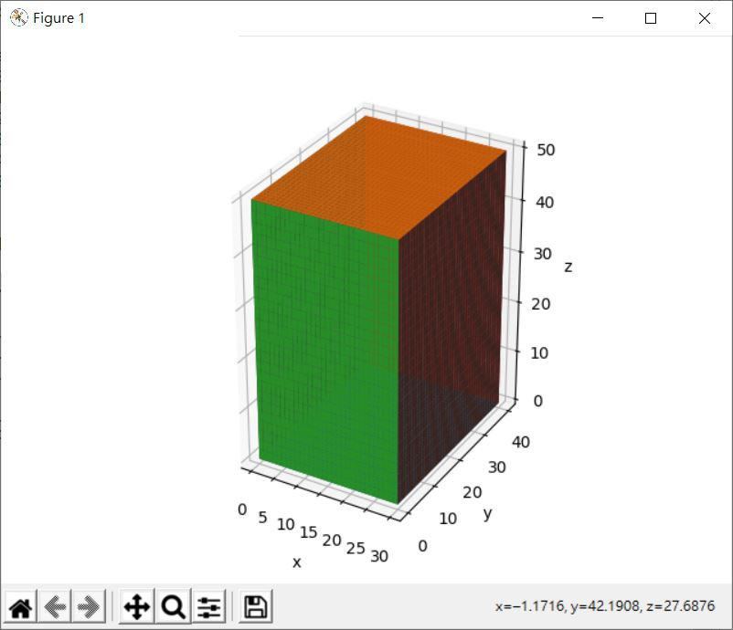
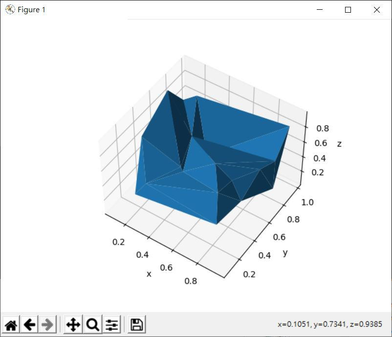
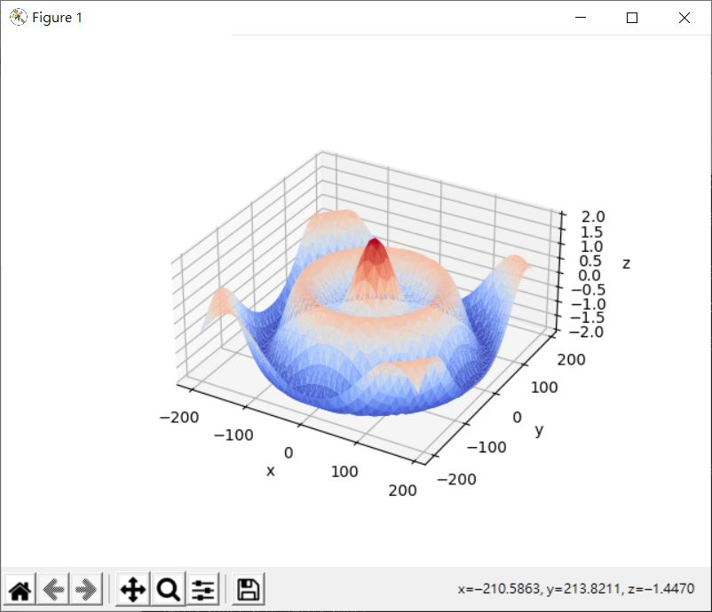
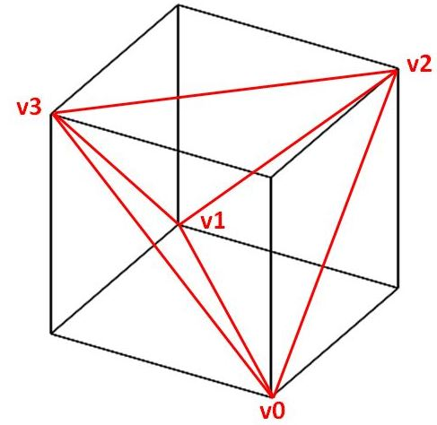
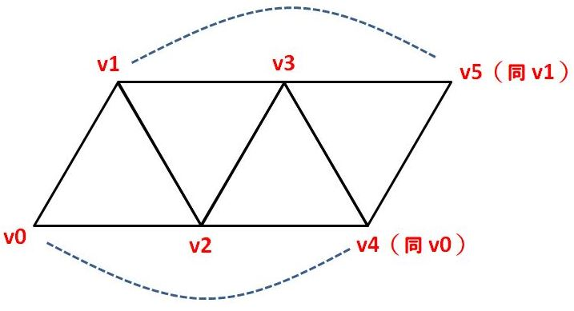
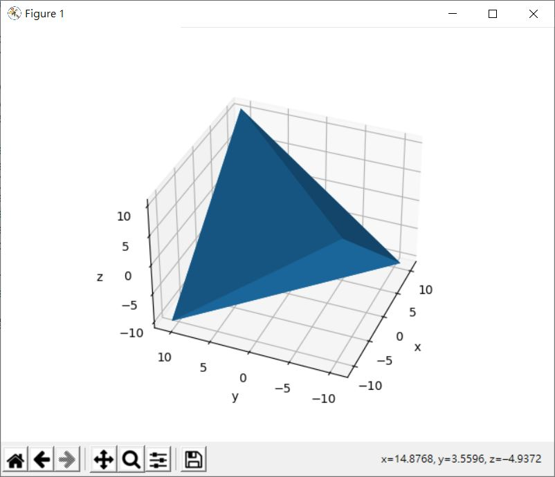

環面或球之類的曲面，可以透過 Matplotlib 的 plot_surface 來繪製，那麼其他立方體之類的呢？像是一個盒子？基本上，是可以透過多次呼叫 plot_surface 來達到目的，例如：
import numpy as np
import matplotlib.pyplot as plt
width = 30
depth = 40
height = 50
def box(width, depth, height):
x = np.arange(width + 1)
y = np.arange(depth + 1)
z = np.arange(height + 1)
X0, Y0 = np.meshgrid(x, y)
Z0 = np.zeros((depth + 1, width + 1))
X1 = X0
Y1 = Y0
Z1 = Z0 + height
X2, Z2 = np.meshgrid(x, z)
Y2 = np.zeros((height + 1, width + 1))
X3 = X2
Y3 = Y2 + depth
Z3 = Z2
Y4, Z4 = np.meshgrid(y, z)
X4 = np.zeros((height + 1, depth + 1))
X5 = X4 + width
Y5 = Y4
Z5 = Z4
surfaces = [
[X0, Y0, Z0],
[X1, Y1, Z1],
[X2, Y2, Z2],
[X3, Y3, Z3],
[X4, Y4, Z4],
[X5, Y5, Z5]
]
ax = plt.axes(projection='3d')
for X, Y, Z in surfaces:
ax.plot_surface(X, Y, Z)
ax.set_xlabel('x')
ax.set_ylabel('y')
ax.set_zlabel('z')
leng = width + depth + height
ax.set_box_aspect((width / leng, depth / leng, height / leng))
plt.show()
box(width, depth, height)
畫出的圖如下：

然而，這種方式並不能套用至各種立方體，例如正四面體就沒辦法用這種方式繪製，怎麼辦呢？Matplotlib 有個 plot_trisurf 方法，可以用來以三角形為基礎來繪製曲面，最基本的使用方式是，提供每個點的座標，它會自動以 x 與 y 進行〈Delaunay 三角分割〉，例如隨機產生一些點：
import numpy as np
import matplotlib.pyplot as plt
n = 20
points = np.random.rand(n, 3)
xs = points[:,0]
ys = points[:,1]
zs = points[:,2]
ax = plt.axes(projection='3d')
ax.plot_trisurf(xs, ys, zs)
ax.set_xlabel('x')
ax.set_ylabel('y')
ax.set_zlabel('z')
plt.show()
plot_trisurf 需要的是一維陣列，分別代表所有座標的 x、y 與 z，這會繪製出以下的圖案：

當然，隨機產生的點沒有連續性，來個可以用連續函式描述的曲面吧！
import numpy as np
import matplotlib.pyplot as plt
from matplotlib import cm
def function_grapher(f, x, y):
X, Y = np.meshgrid(x, y)
Z = f(X, Y)
ax = plt.axes(projection='3d')
# plot_trisurf 需要一維陣列，因此透過 flatten 將二維陣列打平
ax.plot_trisurf(X.flatten(), Y.flatten(), Z.flatten(), cmap = cm.coolwarm)
ax.set_xlabel('x')
ax.set_ylabel('y')
ax.set_zlabel('z')
ax.set_box_aspect((1, 1, 0.5))
plt.title('Axes3D Plot Surface')
plt.show()
def f(x, y):
n = np.sqrt(np.power(x, 2) + np.power(y, 2)) / 180 * np.pi
return np.cos(n) + np.cos(3 * n)
width = 200
step = 10
x = np.arange(-width, width, step)
y = np.arange(-width, width, step)
function_grapher(f, x, y)
這可以繪製出以下的圖案，可以跟〈Matplotlib 立體圖〉中相對應的函式曲面圖比較看看：

那麼這跟繪製正四面體有什麼關係呢？plot_trisurf 可以透過 triangles 參數指定每個三角形使用的座標索引，這就可以用來構造 3D 物件的 mesh 了。
對於正四面體，一個簡單的方式是連接正立方體的四個頂點來繪製：

因為正四面體可以有共用邊，將之展開的話就可以清楚看出，只要依序且循環地走訪頂點四次就可以了：

使用 NumPy 及 Matplotlib 來實作的話：
import numpy as np
import matplotlib.pyplot as plt
def tetrahedron(width):
n = width / (2 ** 0.5) * 0.5;
xs = np.array([n, -n, n, -n])
ys = np.array([n, n, -n, -n])
zs = np.array([n, -n, -n, n])
ax = plt.axes(projection='3d')
ax.plot_trisurf(xs, ys, zs, triangles = [[0, 1, 2], [1, 2, 3], [2, 3, 0], [3, 0, 1]])
ax.set_xlabel('x')
ax.set_ylabel('y')
ax.set_zlabel('z')
plt.show()
width = 30
tetrahedron(width)
就可以繪製出以下的圖案：
